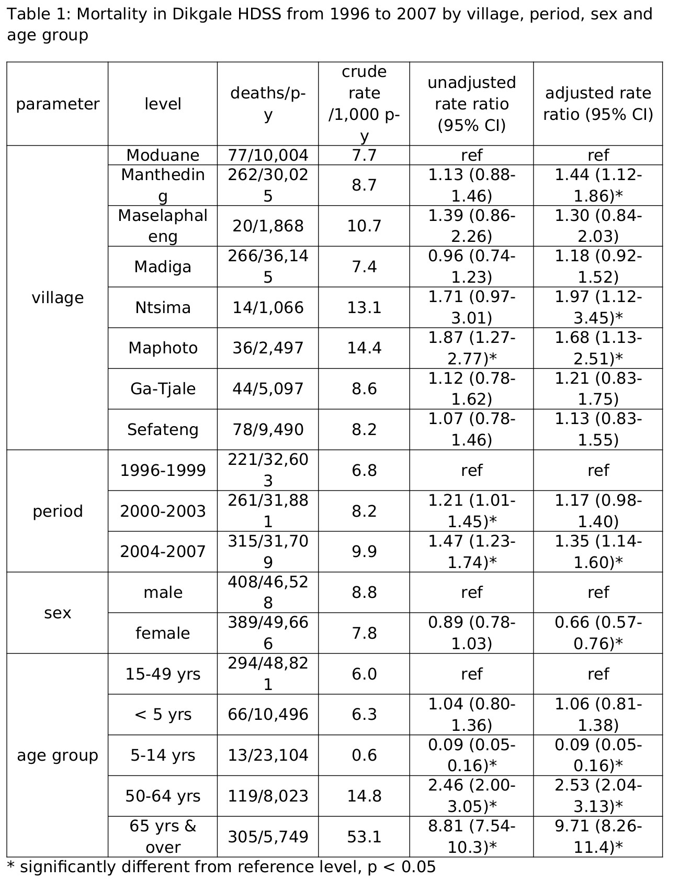
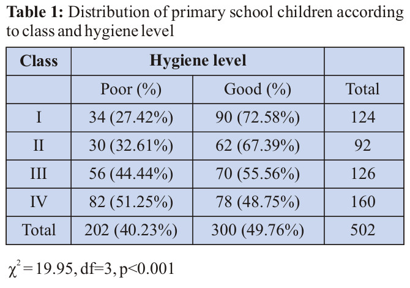

Examples of Tables parsed with line-based algorithm

| Diameter of zone of inhibition, mm. | |||||||
| Test bacteria | Hg(II) cystine, µg/disc | Cd(II) cystine, µg/disc | Ni(II) cystine, µg/disc | Kanamycin, µg/disc | |||
| 50 | 80 | 50 | 80 | 100 | 200 | 30 | |
| Staphytococus aureus | 17 | 28 | 22 | 35 | 11 | 17 | 19 |
| Bacillus subtilis | 18 | 31 | 28 | 39 | 12 | 15 | 24 |
| Shigella dysonteriae | 23 | 34 | 25 | 34 | 10 | 19 | 23 |
| Salmonella typhi | 21 | 32 | 24 | 36 | 5 | 11 | 17 |
| Shigella flexneriae | 25 | 31 | 21 | 28 | 15 | 20 | 25 |
| Streptococcus -β- | - | - | - | - | 7 | 12 | 21 |
| haemolyticus | |||||||
| (-) Expt. was not performed.. | |||||||
With line-based approach the last row is divided into 2 ("Streptococcus -β-" and "haemolyticus"). Caption "(-) Expt. was not performed.." was included into the table content by Grobid. It can be improved by training on more data.

| parameter | level | deaths/p-y | crude rate /1,000 p-y | unadjusted rate ratio (95% CI) | adjusted rate ratio (95% CI) |
| Moduane | 77/10,004 | 7.7 | ref | ref | |
| Manthedin g | 262/30,02 5 | 8.7 | 1.13 (0.88-1.46) | 1.44 (1.12-1.86)* | |
| Maselaphal eng | 20/1,868 | 10.7 | 1.39 (0.86-2.26) | 1.30 (0.84-2.03) | |
| Madiga | 266/36,14 5 | 7.4 | 0.96 (0.74-1.23) | 1.18 (0.92-1.52) | |
| village | Ntsima | 14/1,066 | 13.1 | 1.71 (0.97-3.01) | 1.97 (1.12-3.45)* |
| Maphoto | 36/2,497 | 14.4 | 1.87 (1.27-2.77)* | 1.68 (1.13-2.51)* | |
| Ga-Tjale | 44/5,097 | 8.6 | 1.12 (0.78-1.62) | 1.21 (0.83-1.75) | |
| Sefateng | 78/9,490 | 8.2 | 1.07 (0.78-1.46) | 1.13 (0.83-1.55) | |
| 1996-1999 | 221/32,60 3 | 6.8 | ref | ref | |
| period | 2000-2003 | 261/31,88 1 | 8.2 | 1.21 (1.01-1.45)* | 1.17 (0.98-1.40) |
| 2004-2007 | 315/31,70 9 | 9.9 | 1.47 (1.23-1.74)* | 1.35 (1.14-1.60)* | |
| sex | male female | 408/46,52 8 389/49,66 6 | 8.8 7.8 | ref 0.89 (0.78-1.03) | ref 0.66 (0.57-0.76)* |
| 15-49 yrs | 294/48,82 1 | 6.0 | ref | ref | |
| < 5 yrs | 66/10,496 | 6.3 | 1.04 (0.80-1.36) | 1.06 (0.81-1.38) | |
| age group | 5-14 yrs | 13/23,104 | 0.6 | 0.09 (0.05-0.16)* | 0.09 (0.05-0.16)* |
| 50-64 yrs | 119/8,023 | 14.8 | 2.46 (2.00-3.05)* | 2.53 (2.04-3.13)* | |
| 65 yrs & over | 305/5,749 | 53.1 | 8.81 (7.54-10.3)* | 9.71 (8.26-11.4)* | |
| * |
algorithm fails to recognize additional rows if the content of a cell spans on 2 or more rows. See the row that starts with "sex" - the content of the rows "male" and "female" is merged.

| Class | Hygiene level | ||
| Poor (%) | Good (%) | Total | |
| I | 34 (27.42%) | 90 (72.58%) | 124 |
| II | 30 (32.61%) | 62 (67.39%) | 92 |
| III | 56 (44.44%) | 70 (55.56%) | 126 |
| IV | 82 (51.25%) | 78 (48.75%) | 160 |
| Total | 202 (40.23%) | 300 (49.76%) | 502 |
| 2 ÷ = 19.95, df=3, p<0.001 | |||